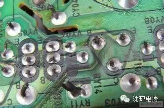
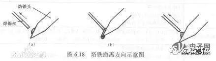

使用小程序
虚焊是常见的一种线路故障，有两种， 一种是在生产过程中的，因生产工艺不当引起的，时通时不通的不稳定状态； 另外一种是电器经过长期使用，一些发热较严重的零件，其焊脚处的焊点极容易出现老化剥离现象所引起的。

一是看，用放大倍数高的放大镜，仔细检查线路板底部，特别要检查功率大，发热量大的元件，比如，大功率电阻，三端稳压，三极管，芯片，集成块的电源引脚和场块的输出脚，偏转线圈引出线桩头，等等，大部分故障都能通过补焊解决问题。
二是敲，可用一根木棍轻轻敲击每一块线路板，插件盒，一边敲，一边看图像，如果有反映，就可以大致确定是电源板，还是扫描板或者信号板，或者插件盒的故障。
三就是摇，确定了是那一块线路板有问题以后，用一木棍对每一个元件轻轻摇动，很快就可以找出是那一个元件松动。
虚焊可以通过目视的方式直接判定，发现原件引脚明显没有与焊盘连接，则称之为虚焊；发现原件与焊盘完好连接但实际上并未连接，则称之为假焊。假焊比虚焊更难判定。
1．保持烙铁头的清洁
可用湿布或湿海绵擦烙铁头上的杂质，温度过高时，可暂时拔下插头或蘸松香降温，随时使烙铁头上挂锡良好。
2．上锡注意事项
若焊件和焊点表面带有锈渍、污垢或氧化物，应在焊接之前“刮”，直至露出光亮金属，才能给焊件或焊点表面镀上锡。
3．焊接温度要适当
为了使温度适当，应根据元器件大小选用功率合适的电烙铁，当选用的电烙铁的功率一定时，应注意控制加热时间的长短。
当焊锡从烙铁头上自动散落到被焊物上时，说明加热时间已足够。此时迅速移开烙铁头，被焊处留下一个圆滑的焊点。若移开电烙铁后，被焊处一点锡不留或留下很少，则说明加热时间太短、温度不够或被焊物太脏；若移开电烙铁前，焊锡就往下流，则表明加热时间太长，温度过高。一般烙铁头的温度控制在使焊剂熔化较快又不冒烟时为最佳焊接温度。
4．上锡适量
根据所需焊点的大小来决定电烙铁的蘸锡量，使焊锡足够包裹住被焊韧，形成一个大小合适且圆滑的焊点。焊点也不是锡多、锡大为好，相反，这种焊点虚焊的可能性更大，有可能是焊锡堆积在上面，而不是焊在上面。若一次上锡量不够，可再次补焊，但须待前次上的锡一同被熔化后再移开电烙铁；若一次上锡量太多，可用烙铁头带走适量。
5．焊接时间要适当
焊接时间的恰当运用也是焊接技艺的重要环节。如果是印制电路板的焊接，一般以2～3S为宜。焊接时间过长，焊料中的焊剂完全挥发，失去助焊作用，使焊点表面氧化，造成焊点表面粗糙、发黑、不光亮、带毛刺或流动等缺陷。同时，焊接时间过长、温度过高，还容易烫坏元器件或印制电路板的铜箔。若焊接时间过短，又达不到焊接温度，焊锡不能充分熔化，影响焊剂的润湿，易造成虚焊。
6．焊点凝固过程中不要触动焊点
焊点在未完全凝固前，即使有很小的振动也会使焊点变形，引起虚焊。因此，在烙铁头撤离之前对焊接件要予以固定，如用镊子夹持，或烙铁头撤离之后快速用嘴吹气，采取这些做法的目的，就是缩短焊点凝固的时间。
7．烙铁头撤离时应注意角度
如图6.18 (a)所示，当烙铁头沿斜上方撤离时，烙铁头上带走少量的锡珠，它可形成圆滑的焊点；图6.18 (b)所示，当烙铁头垂直向上撤离时，可形成拉尖毛刺的焊点；图6.18 (c)所示，当烙铁头以水平方向撤离时，烙铁头可带走大部分锡珠。
